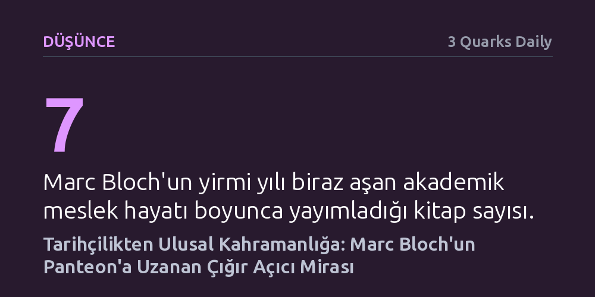

DUSUNCE · 3 Quarks Daily · 2026-10-26
Tarih araştırmalarını kökten değiştiren Annales ekolünün kurucusu ve Fransız Direnişi şehidi Marc Bloch, Fransa'nın en saygın anıt mezarı Panthéon'a kabul edilen ilk tarihçi oldu. Bu onur, Bloch'un akademik devrimini Nazi işgaline karşı canı pahasına sergilediği sivil direnişle birleştiriyor.
Tarihçilerin yalnızca geçmişi edilgen biçimde kaydeden gözlemciler değil, yöntemleriyle disiplini ve eylemleriyle toplumsal vicdanı bizzat şekillendiren figürler olabileceğini gösterir.

Paris'in merkezindeki Panthéon, 23 Haziran günü tarihi bir ana sahne oldu. Sıcak hava dalgasının etkisindeki başkentte toplanan çocuk koroları ve devlet erkânının huzurunda, Sorbonne profesörü Marc Bloch ve eşi Simonne'un naaşları anıt mezara kabul edildi. Cumhurbaşkanı Emmanuel Macron'un meşaleler altında yaptığı konuşmayla taçlanan bu tören, Fransız Devrimi'nden bu yana Victor Hugo, Marie Curie ve Simone Veil gibi simaları ağırlayan mabede ilk kez bir tarihçinin defnedilmesini sağladı.
Tarih disiplini yüzyıllar boyunca ulusların kahramanlarını kaydetmiş ve onların efsanelerini inşa etmiştir; fakat tarihçilerin kendilerinin ulusal bir kahramana dönüşmesi neredeyse benzersiz bir durumdur. Bloch'un Fransa nezdinde bu saygınlığa erişmesi, yalnızca ürettiği akademik külliyatın büyüklüğüyle değil, ülkesinin kader anında sergilediği sivil ve ahlaki cesaretle açıklanmaktadır.
1886 yılında Alsas kökenli seküler bir Yahudi ailenin çocuğu olarak doğan Bloch, Fransa'nın 19. yüzyıl sonundaki kuramsal atılımlarının merkezinde, saygın École Normale Supérieure'de eğitim gördü. Birinci Dünya Savaşı patlak verdiğinde bir piyade subayı olarak cephede siper savaşının tüm yıkımını bizzat tecrübe etti. Bu tecrübe, onun insan davranışına ve kitle psikolojisine olan ilgisini keskinleştirdi.
Savaşın ardından kurduğu bilimsel dergiyle tarih araştırmalarında yepyeni bir gelenek başlattı. Tarihi yalnızca kralların, savaşların ve diplomatik antlaşmaların kronolojisi olmaktan çıkararak coğrafya, sosyoloji ve iktisadın bulgularıyla harmanladı. Özellikle feodalizm ve ortaçağ kırsal tarihi üzerine derinleşen Bloch; köylülerin gündelik yaşamını, tarım pratiklerini ve mülkiyet rejimlerini tarih yazımının merkezine taşıdı.
Bloch'un akademik meslek hayatı, Strazburg, Paris ve Montpellier üniversitelerindeki profesörlük görevleriyle birlikte ancak yirmi yılı biraz aşan kısa bir dönemi kapsadı. Buna karşın geride bıraktığı entelektüel üretim muazzam bir hacme ulaştı. 'Kralın Dokunuşu', 'Fransız Kırsal Tarihi' ve 'Feodal Toplum' gibi bugün de temel başvuru kaynağı kabul edilen yedi kitaba imza attı.
Çalışmaları hiçbir zaman dar bir döneme veya konuya sıkışıp kalmadı. Su değirmenlerinin yayılışından altın paraların dolaşımına, köleliğin dönüşümünden ortaçağ imparatorluk düşüncesine kadar geniş bir spektrumda altmıştan fazla makale yayımladı. Her araştırmasında, toplumun farklı katmanlarını birbirine bağlayan bütüncül bir tarih anlayışını somutlaştırdı.
Marc Bloch'un büyüklüğü, odasına çekilmiş bir akademisyen olarak kalmayı reddetmesinde yatar. Nazi işgali karşısında Fransız seçkinlerinin basiretsizliğini ve ahlaki çöküşünü açık bir dille eleştiren bir metin kaleme aldıktan sonra doğrudan eyleme geçti. İlerleyen yaşına ve akademik konumuna bakılmaksızın Fransız Direnişi saflarına katılarak yeraltı mücadelesi yürüttü.
Haziran 1944'te Gestapo tarafından tutuklanan Bloch, maruz kaldığı ağır işkencelere karşın davasından geri adım atmadı ve kurşuna dizilerek katledildi. Metnin de vurguladığı gibi, "Tarihçiler çoğu zaman kahramanlar yaratmıştır, ancak çok azı kendisi kahramana dönüşmüştür." Bloch'un Panthéon'a kabulü, hem modern tarih yöntemine kazandırdığı zihniyet devriminin hem de baskı karşısında canı pahasına savunduğu özgürlük onurunun en üst düzeyde tescilidir.